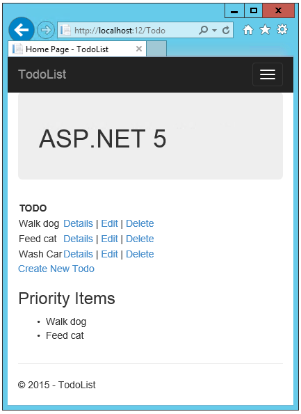
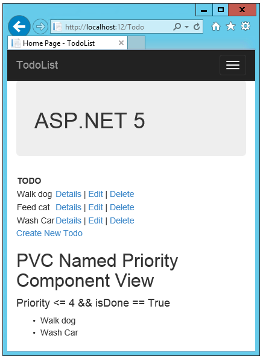

View Components¶
Sections:
Introducing view components¶
New to ASP.NET Core MVC, view components are similar to partial views, but they are much more powerful. View components don’t use model binding, and only depend on the data you provide when calling into it. A view component:
- Renders a chunk rather than a whole response
- Includes the same separation-of-concerns and testability benefits found between a controller and view
- Can have parameters and business logic
- Is typically invoked from a layout page
View Components are intended anywhere you have reusable rendering logic that is too complex for a partial view, such as:
- Dynamic navigation menus
- Tag cloud (where it queries the database)
- Login panel
- Shopping cart
- Recently published articles
- Sidebar content on a typical blog
- A login panel that would be rendered on every page and show either the links to log out or log in, depending on the log in state of the user
A view component consists of two parts, the class (typically derived from ViewComponent) and the result it returns (typically a view). Like controllers, a view component can be a POCO, but most developers will want to take advantage of the methods and properties available by deriving from ViewComponent.
Creating a view component¶
This section contains the high level requirements to create a view component. Later in the article we’ll examine each step in detail and create a view component.
The view component class¶
A view component class can be created by any of the following:
- Deriving from ViewComponent
- Decorating a class with the
[ViewComponent]attribute, or deriving from a class with the[ViewComponent]attribute - Creating a class where the name ends with the suffix ViewComponent
Like controllers, view components must be public, non-nested, and non-abstract classes. The view component name is the class name with the “ViewComponent” suffix removed. It can also be explicitly specified using the ViewComponentAttribute.Name property.
A view component class:
- Fully supports constructor dependency injection
- Does not take part in the controller lifecycle, which means you can’t use filters in a view component
View component methods¶
A view component defines its logic in an InvokeAsync method that returns an IViewComponentResult. Parameters come directly from invocation of the view component, not from model binding. A view component never directly handles a request. Typically a view component initializes a model and passes it to a view by calling the View method. In summary, view component methods:
- Define an InvokeAsync` method that returns an
IViewComponentResult - Typically initializes a model and passes it to a view by calling the ViewComponent View method
- Parameters come from the calling method, not HTTP, there is no model binding
- Are not reachable directly as an HTTP endpoint, they are invoked from your code (usually in a view). A view component never handles a request
- Are overloaded on the signature rather than any details from the current HTTP request
View search path¶
The runtime searches for the view in the following paths:
- Views/<controller_name>/Components/<view_component_name>/<view_name>
- Views/Shared/Components/<view_component_name>/<view_name>
The default view name for a view component is Default, which means your view file will typically be named Default.cshtml. You can specify a different view name when creating the view component result or when calling the View method.
We recommend you name the view file Default.cshtml and use the Views/Shared/Components/<view_component_name>/<view_name> path. The PriorityList view component used in this sample uses Views/Shared/Components/PriorityList/Default.cshtml for the view component view.
Invoking a view component¶
To use the view component, call @Component.InvokeAsync("Name of view component", <parameters>) from a view. The parameters will be passed to the InvokeAsync method. The PriorityList view component developed in the article is invoked from the Views/Todo/Index.cshtml view file. In the following, the InvokeAsync method is called with two parameters:
@await Component.InvokeAsync("PriorityList", 2, false)
Invoking a view component directly from a controller¶
View components are typically invoked from a view, but you can invoke them directly from a controller method. While view components do not define endpoints like controllers, you can easily implement a controller action that returns the content of a ViewComponentResult.
In this example, the view component is called directly from the controller:
public IActionResult IndexVC()
{
return ViewComponent("PriorityList", 3, false);
}
Walkthrough: Creating a simple view component¶
Download, build and test the starter code. It’s a simple project with a Todo controller that displays a list of Todo items.
Add a ViewComponent class¶
Create a ViewComponents folder and add the following PriorityListViewComponent class.
using Microsoft.AspNet.Mvc;
using Microsoft.Data.Entity;
using System.Collections.Generic;
using System.Linq;
using System.Threading.Tasks;
using ViewComponentSample.Models;
namespace ViewComponentSample.ViewComponents
{
public class PriorityListViewComponent : ViewComponent
{
private readonly ToDoContext db;
public PriorityListViewComponent(ToDoContext context)
{
db = context;
}
public async Task<IViewComponentResult> InvokeAsync(
int maxPriority, bool isDone)
{
var items = await GetItemsAsync(maxPriority, isDone);
return View(items);
}
private Task<List<TodoItem>> GetItemsAsync(int maxPriority, bool isDone)
{
return db.ToDo.Where(x => x.IsDone == isDone &&
x.Priority <= maxPriority).ToListAsync();
}
}
}
Notes on the code:
View component classes can be contained in any folder in the project.
Because the class name
PriorityListViewComponentends with the suffix ViewComponent, the runtime will use the string “PriorityList” when referencing the class component from a view. I’ll explain that in more detail later.The
[ViewComponent]attribute can change the name used to reference a view component. For example, we could have named the classXYZ, and applied theViewComponentattribute:[ViewComponent(Name = "PriorityList")] public class XYZ : ViewComponent
The
[ViewComponent]attribute above tells the view component selector to use the namePriorityListwhen looking for the views associated with the component, and to use the string “PriorityList” when referencing the class component from a view. I’ll explain that in more detail later.The component uses dependency injection to make the data context available.
InvokeAsyncexposes a method which can be called from a view, and it can take an arbitrary number of arguments.The
InvokeAsyncmethod returns the set ofToDoitems that are not completed and have priority lower than or equal tomaxPriority.
Create the view component Razor view¶
- Create the Views/Shared/Components folder. This folder must be named Components.
- Create the Views/Shared/Components/PriorityList folder. This folder name must match the name of the view component class, or the name of the class minus the suffix (if we followed convention and used the ViewComponent suffix in the class name). If you used the
ViewComponentattribute, the class name would need to match the attribute designation. - Create a Views/Shared/Components/PriorityList/Default.cshtml Razor view.
@model IEnumerable<ViewComponentSample.Models.TodoItem>
<h3>Priority Items</h3>
<ul>
@foreach (var todo in Model)
{
<li>@todo.Name</li>
}
</ul>
The Razor view takes a list of TodoItem and displays them. If the view component InvokeAsync method doesn’t pass the name of the view (as in our sample), Default is used for the view name by convention. Later in the tutorial, I’ll show you how to pass the name of the view. To override the default styling for a specific controller, add a view to the controller specific view folder (for example Views/Todo/Components/PriorityList/Default.cshtml).
If the view component was controller specific, you could add it to the controller specific folder (Views/Todo/Components/PriorityList/Default.cshtml)
- Add a
divcontaining a call to the priority list component to the bottom of the Views/Todo/index.cshtml file:
}
</table>
<div >
@await Component.InvokeAsync("PriorityList", 2, false)
</div>
The markup @Component.InvokeAsync shows the syntax for calling view components. The first argument is the name of the component we want to invoke or call. Subsequent parameters are passed to the component. InvokeAsync can take an arbitrary number of arguments.
The following image shows the priority items:
You can also call the view component directly from the controller:
public IActionResult IndexVC()
{
return ViewComponent("PriorityList", 3, false);
}
Specifying a view name¶
A complex view component might need to specify a non-default view under some conditions. The following code shows how to specify the “PVC” view from the InvokeAsync method. Update the InvokeAsync method in the PriorityListViewComponent class.
public async Task<IViewComponentResult> InvokeAsync(
int maxPriority, bool isDone)
{
string MyView = "Default";
// If asking for all completed tasks, render with the "PVC" view.
if (maxPriority > 3 && isDone == true)
{
MyView = "PVC";
}
var items = await GetItemsAsync(maxPriority, isDone);
return View(MyView, items);
}
Copy the Views/Shared/Components/PriorityList/Default.cshtml file to a view named Views/Shared/Components/PriorityList/PVC.cshtml. Add a heading to indicate the PVC view is being used.
@model IEnumerable<ViewComponentSample.Models.TodoItem>
<h2> PVC Named Priority Component View</h2>
<h4>@ViewBag.PriorityMessage</h4>
<ul>
@foreach (var todo in Model)
{
<li>@todo.Name</li>
}
</ul>
Update Views/TodoList/Index.cshtml
</table>
<div>
@await Component.InvokeAsync("PriorityList", 4, true)
</div>
Run the app and verify PVC view.
If the PVC view is not rendered, verify you are calling the view component with a priority of 4 or higher.
Examine the view path¶
Change the priority parameter to three or less so the priority view is not returned.
Temporarily rename the Views/Todo/Components/PriorityList/Default.cshtml to Temp.cshtml.
Test the app, you’ll get the following error:
An unhandled exception occurred while processing the request. InvalidOperationException: The view 'Components/PriorityList/Default' was not found. The following locations were searched: /Views/ToDo/Components/PriorityList/Default.cshtml /Views/Shared/Components/PriorityList/Default.cshtml. Microsoft.AspNetCore.Mvc.ViewEngines.ViewEngineResult.EnsureSuccessful()
- Copy Views/Shared/Components/PriorityList/Default.cshtml to *Views/Todo/Components/PriorityList/Default.cshtml.
- Add some markup to the Todo view component view to indicate the view is from the Todo folder.
- Test the non-shared component view.
Avoiding magic strings¶
If you want compile time safety you can replace the hard coded view component name with the class name. Create the view component without the “ViewComponent” suffix:
using Microsoft.AspNet.Mvc;
using Microsoft.Data.Entity;
using System.Collections.Generic;
using System.Linq;
using System.Threading.Tasks;
using ViewComponentSample.Models;
namespace ViewComponentSample.ViewComponents
{
public class PriorityList : ViewComponent
{
private readonly ToDoContext db;
public PriorityList(ToDoContext context)
{
db = context;
}
public async Task<IViewComponentResult> InvokeAsync(
int maxPriority, bool isDone)
{
var items = await GetItemsAsync(maxPriority, isDone);
return View(items);
}
private Task<List<TodoItem>> GetItemsAsync(int maxPriority, bool isDone)
{
return db.ToDo.Where(x => x.IsDone == isDone &&
x.Priority <= maxPriority).ToListAsync();
}
}
}
Add a using statement to your Razor view file and use the nameof operator:
@using ViewComponentSample.Models
@using ViewComponentSample.ViewComponents
@model IEnumerable<TodoItem>
<h2>ToDo nameof</h2>
<!-- Markup removed for brevity. -->
}
</table>
<div>
@await Component.InvokeAsync(nameof(PriorityList), 4, true)
</div>